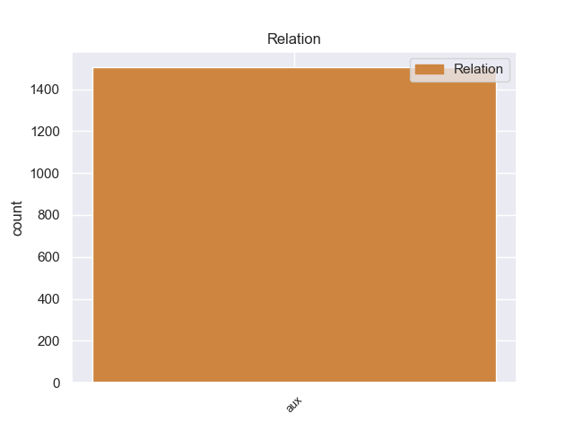
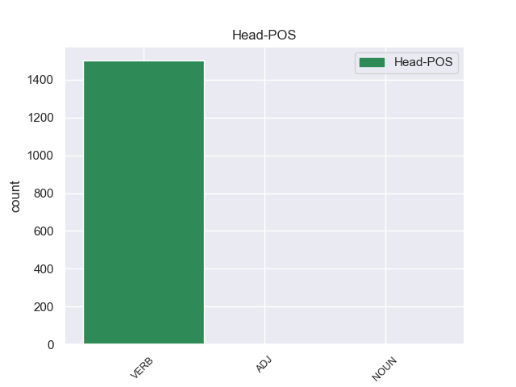
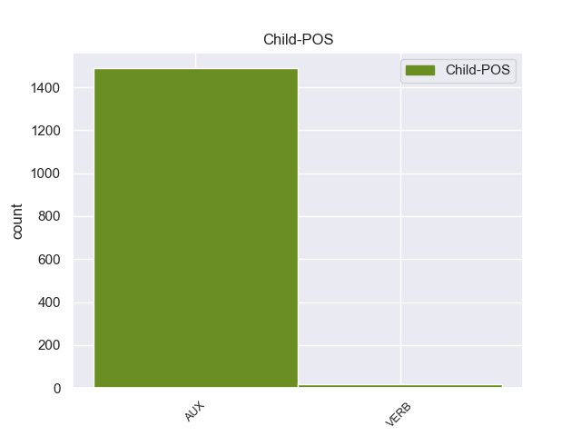

Distribution of features within this leaf



Agreement Rules sorted by frequency.
- When the dependent token is the auxiliary(aux) of the head token,
1 Cuando _ _ _ _ 0 _ _ _
2 tras _ _ _ _ 0 _ _ _
3 su _ _ _ _ 0 _ _ _
4 muerte _ _ _ _ 0 _ _ _
5 , _ _ _ _ 0 _ _ _
6 los _ _ _ _ 0 _ _ _
7 estados _ _ _ _ 0 _ _ _
8 de _ _ _ _ 0 _ _ _
9 California _ _ _ _ 0 _ _ _
10 y _ _ _ _ 0 _ _ _
11 Texas _ _ _ _ 0 _ _ _
12 trataron _ _ _ _ 0 _ _ _
13 de _ _ _ _ 0 _ _ _
14 cobrar _ _ _ _ 0 _ _ _
15 los _ _ _ _ 0 _ _ _
16 impuestos _ _ _ _ 0 _ _ _
17 relativos _ _ _ _ 0 _ _ _
18 a _ _ _ _ 0 _ _ _
19 su _ _ _ _ 0 _ _ _
20 herencia _ _ _ _ 0 _ _ _
21 , _ _ _ _ 0 _ _ _
22 no _ _ _ _ 0 _ _ _
23 pudieron pudieer AUX _ Mood=Ind|Number=Plur|Person=3|Tense=Past|VerbForm=Fin 24 aux _ _
24 probar probar VERB _ Gender=Masc|Number=Sing|Tense=Past|VerbForm=Part 0 _ _ _
25 que _ _ _ _ 0 _ _ _
26 hubiera _ _ _ _ 0 _ _ _
27 sido _ _ _ _ 0 _ _ _
28 residente _ _ _ _ 0 _ _ _
29 legal _ _ _ _ 0 _ _ _
30 en _ _ _ _ 0 _ _ _
31 ninguno _ _ _ _ 0 _ _ _
32 de _ _ _ _ 0 _ _ _
33 los _ _ _ _ 0 _ _ _
34 dos _ _ _ _ 0 _ _ _
35 territorios _ _ _ _ 0 _ _ _
36 . _ _ _ _ 0 _ _ _
Disagree Examples:
1 He haber AUX _ Mood=Ind|Number=Sing|Person=1|Tense=Pres|VerbForm=Fin 2 aux _ _
2 estado estar VERB _ Gender=Masc|Number=Sing|Tense=Past|VerbForm=Part 0 _ _ _
3 una _ _ _ _ 0 _ _ _
4 vez _ _ _ _ 0 _ _ _
5 , _ _ _ _ 0 _ _ _
6 y _ _ _ _ 0 _ _ _
7 aunque _ _ _ _ 0 _ _ _
8 no _ _ _ _ 0 _ _ _
9 tengo _ _ _ _ 0 _ _ _
10 ninguna _ _ _ _ 0 _ _ _
11 queja _ _ _ _ 0 _ _ _
12 acerca _ _ _ _ 0 _ _ _
13 de _ _ _ _ 0 _ _ _
14 el _ _ _ _ 0 _ _ _
15 personal _ _ _ _ 0 _ _ _
16 y _ _ _ _ 0 _ _ _
17 de _ _ _ _ 0 _ _ _
18 el _ _ _ _ 0 _ _ _
19 servicio _ _ _ _ 0 _ _ _
20 , _ _ _ _ 0 _ _ _
21 me _ _ _ _ 0 _ _ _
22 resultó _ _ _ _ 0 _ _ _
23 decepcionante _ _ _ _ 0 _ _ _
24 pedir _ _ _ _ 0 _ _ _
25 una _ _ _ _ 0 _ _ _
26 pizza _ _ _ _ 0 _ _ _
27 , _ _ _ _ 0 _ _ _
28 concretamente _ _ _ _ 0 _ _ _
29 la _ _ _ _ 0 _ _ _
30 calzone _ _ _ _ 0 _ _ _
31 ( _ _ _ _ 0 _ _ _
32 forma _ _ _ _ 0 _ _ _
33 de _ _ _ _ 0 _ _ _
34 croissant _ _ _ _ 0 _ _ _
35 ) _ _ _ _ 0 _ _ _
36 y _ _ _ _ 0 _ _ _
37 me _ _ _ _ 0 _ _ _
38 encuentro _ _ _ _ 0 _ _ _
39 con _ _ _ _ 0 _ _ _
40 una _ _ _ _ 0 _ _ _
41 pizza _ _ _ _ 0 _ _ _
42 inflada _ _ _ _ 0 _ _ _
43 de _ _ _ _ 0 _ _ _
44 aire _ _ _ _ 0 _ _ _
45 y _ _ _ _ 0 _ _ _
46 hueca _ _ _ _ 0 _ _ _
47 . _ _ _ _ 0 _ _ _
1 Hoy _ _ _ _ 0 _ _ _
2 , _ _ _ _ 0 _ _ _
3 la _ _ _ _ 0 _ _ _
4 casa _ _ _ _ 0 _ _ _
5 Motown _ _ _ _ 0 _ _ _
6 ha haber AUX _ Mood=Ind|Number=Sing|Person=3|Tense=Pres|VerbForm=Fin 7 aux _ _
7 cambiado cambiar VERB _ Gender=Masc|Number=Sing|Tense=Past|VerbForm=Part 0 _ _ _
8 el _ _ _ _ 0 _ _ _
9 negro _ _ _ _ 0 _ _ _
10 representativo _ _ _ _ 0 _ _ _
11 de _ _ _ _ 0 _ _ _
12 su _ _ _ _ 0 _ _ _
13 música _ _ _ _ 0 _ _ _
14 por _ _ _ _ 0 _ _ _
15 el _ _ _ _ 0 _ _ _
16 riguroso _ _ _ _ 0 _ _ _
17 negro _ _ _ _ 0 _ _ _
18 de _ _ _ _ 0 _ _ _
19 luto _ _ _ _ 0 _ _ _
20 , _ _ _ _ 0 _ _ _
21 Nick _ _ _ _ 0 _ _ _
22 Ashford _ _ _ _ 0 _ _ _
23 ha _ _ _ _ 0 _ _ _
24 fallecido _ _ _ _ 0 _ _ _
25 a _ _ _ _ 0 _ _ _
26 causa _ _ _ _ 0 _ _ _
27 de _ _ _ _ 0 _ _ _
28 un _ _ _ _ 0 _ _ _
29 cáncer _ _ _ _ 0 _ _ _
30 de _ _ _ _ 0 _ _ _
31 garganta _ _ _ _ 0 _ _ _
32 a _ _ _ _ 0 _ _ _
33 los _ _ _ _ 0 _ _ _
34 70 _ _ _ _ 0 _ _ _
35 años _ _ _ _ 0 _ _ _
36 de _ _ _ _ 0 _ _ _
37 edad _ _ _ _ 0 _ _ _
38 . _ _ _ _ 0 _ _ _
1 Hoy _ _ _ _ 0 _ _ _
2 , _ _ _ _ 0 _ _ _
3 la _ _ _ _ 0 _ _ _
4 casa _ _ _ _ 0 _ _ _
5 Motown _ _ _ _ 0 _ _ _
6 ha _ _ _ _ 0 _ _ _
7 cambiado _ _ _ _ 0 _ _ _
8 el _ _ _ _ 0 _ _ _
9 negro _ _ _ _ 0 _ _ _
10 representativo _ _ _ _ 0 _ _ _
11 de _ _ _ _ 0 _ _ _
12 su _ _ _ _ 0 _ _ _
13 música _ _ _ _ 0 _ _ _
14 por _ _ _ _ 0 _ _ _
15 el _ _ _ _ 0 _ _ _
16 riguroso _ _ _ _ 0 _ _ _
17 negro _ _ _ _ 0 _ _ _
18 de _ _ _ _ 0 _ _ _
19 luto _ _ _ _ 0 _ _ _
20 , _ _ _ _ 0 _ _ _
21 Nick _ _ _ _ 0 _ _ _
22 Ashford _ _ _ _ 0 _ _ _
23 ha haber AUX _ Mood=Ind|Number=Sing|Person=3|Tense=Pres|VerbForm=Fin 24 aux _ _
24 fallecido fallecer VERB _ Gender=Masc|Number=Sing|Tense=Past|VerbForm=Part 0 _ _ _
25 a _ _ _ _ 0 _ _ _
26 causa _ _ _ _ 0 _ _ _
27 de _ _ _ _ 0 _ _ _
28 un _ _ _ _ 0 _ _ _
29 cáncer _ _ _ _ 0 _ _ _
30 de _ _ _ _ 0 _ _ _
31 garganta _ _ _ _ 0 _ _ _
32 a _ _ _ _ 0 _ _ _
33 los _ _ _ _ 0 _ _ _
34 70 _ _ _ _ 0 _ _ _
35 años _ _ _ _ 0 _ _ _
36 de _ _ _ _ 0 _ _ _
37 edad _ _ _ _ 0 _ _ _
38 . _ _ _ _ 0 _ _ _
1 Una _ _ _ _ 0 _ _ _
2 ola _ _ _ _ 0 _ _ _
3 de _ _ _ _ 0 _ _ _
4 inmigrantes _ _ _ _ 0 _ _ _
5 post _ _ _ _ 0 _ _ _
6 - _ _ _ _ 0 _ _ _
7 apartheid _ _ _ _ 0 _ _ _
8 provenientes _ _ _ _ 0 _ _ _
9 de _ _ _ _ 0 _ _ _
10 el _ _ _ _ 0 _ _ _
11 sur _ _ _ _ 0 _ _ _
12 asiático _ _ _ _ 0 _ _ _
13 ( _ _ _ _ 0 _ _ _
14 que _ _ _ _ 0 _ _ _
15 incluye _ _ _ _ 0 _ _ _
16 pakistaníes _ _ _ _ 0 _ _ _
17 ) _ _ _ _ 0 _ _ _
18 ha haber AUX _ Mood=Ind|Number=Sing|Person=3|Tense=Pres|VerbForm=Fin 20 aux _ _
19 también _ _ _ _ 0 _ _ _
20 aportado aportar VERB _ Gender=Masc|Number=Sing|Tense=Past|VerbForm=Part 0 _ _ _
21 a _ _ _ _ 0 _ _ _
22 la _ _ _ _ 0 _ _ _
23 diversidad _ _ _ _ 0 _ _ _
24 cultural _ _ _ _ 0 _ _ _
25 de _ _ _ _ 0 _ _ _
26 Sudáfrica _ _ _ _ 0 _ _ _
27 . _ _ _ _ 0 _ _ _
1 El _ _ _ _ 0 _ _ _
2 jurado _ _ _ _ 0 _ _ _
3 que _ _ _ _ 0 _ _ _
4 falló _ _ _ _ 0 _ _ _
5 el _ _ _ _ 0 _ _ _
6 premio _ _ _ _ 0 _ _ _
7 estuvo _ _ _ _ 0 _ _ _
8 presido _ _ _ _ 0 _ _ _
9 por _ _ _ _ 0 _ _ _
10 el _ _ _ _ 0 _ _ _
11 director _ _ _ _ 0 _ _ _
12 general _ _ _ _ 0 _ _ _
13 de _ _ _ _ 0 _ _ _
14 el _ _ _ _ 0 _ _ _
15 Libro _ _ _ _ 0 _ _ _
16 , _ _ _ _ 0 _ _ _
17 Rogelio _ _ _ _ 0 _ _ _
18 Blanco _ _ _ _ 0 _ _ _
19 , _ _ _ _ 0 _ _ _
20 y _ _ _ _ 0 _ _ _
21 han haber AUX _ Mood=Ind|Number=Plur|Person=3|Tense=Pres|VerbForm=Fin 22 aux _ _
22 formado formar VERB _ Gender=Masc|Number=Sing|Tense=Past|VerbForm=Part 0 _ _ _
23 parte _ _ _ _ 0 _ _ _
24 de _ _ _ _ 0 _ _ _
25 él _ _ _ _ 0 _ _ _
26 , _ _ _ _ 0 _ _ _
27 entre _ _ _ _ 0 _ _ _
28 otros _ _ _ _ 0 _ _ _
29 , _ _ _ _ 0 _ _ _
30 José _ _ _ _ 0 _ _ _
31 Antonio _ _ _ _ 0 _ _ _
32 Pascual _ _ _ _ 0 _ _ _
33 , _ _ _ _ 0 _ _ _
34 Jordi _ _ _ _ 0 _ _ _
35 Cornudella _ _ _ _ 0 _ _ _
36 , _ _ _ _ 0 _ _ _
37 María _ _ _ _ 0 _ _ _
38 José _ _ _ _ 0 _ _ _
39 Rivera _ _ _ _ 0 _ _ _
40 , _ _ _ _ 0 _ _ _
41 Anna _ _ _ _ 0 _ _ _
42 Caballé _ _ _ _ 0 _ _ _
43 y _ _ _ _ 0 _ _ _
44 los _ _ _ _ 0 _ _ _
45 dos _ _ _ _ 0 _ _ _
46 últimos _ _ _ _ 0 _ _ _
47 autores _ _ _ _ 0 _ _ _
48 galardonados _ _ _ _ 0 _ _ _
49 , _ _ _ _ 0 _ _ _
50 Rafael _ _ _ _ 0 _ _ _
51 Sánchez _ _ _ _ 0 _ _ _
52 Ferlosio _ _ _ _ 0 _ _ _
53 ( _ _ _ _ 0 _ _ _
54 2009 _ _ _ _ 0 _ _ _
55 ) _ _ _ _ 0 _ _ _
56 y _ _ _ _ 0 _ _ _
57 Josep _ _ _ _ 0 _ _ _
58 María _ _ _ _ 0 _ _ _
59 Castellet _ _ _ _ 0 _ _ _
60 . _ _ _ _ 0 _ _ _